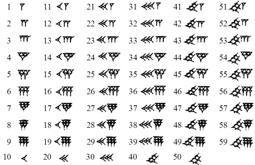

古代エジプトの数字（ヒエログリフ）
紀元前 3000 年ごろ成立。
1 ～ 1,000,000（9,999,999）まで表現可能。
以下にユニコードにグリフが存在する 1 ～ 90,000 まで記載。
| 1 | 2 | 3 | 4 | 5 | 6 | 7 | 8 | 9 |
| 𓏺 | 𓏻 | 𓏼 | 𓏽 | 𓏾 | 𓏿 | 𓐀 | 𓐁 | 𓐂 |
| U+133FA | U+133FB | U+133FC | U+133FD | U+133FE | U+133FF | U+13400 | U+13401 | U+13402 |
| 10 | 20 | 30 | 40 | 50 | 60 | 70 | 80 | 90 |
| 𓎆 | 𓎇 | 𓎈 | 𓎉 | 𓎊 | 𓎋 | 𓎌 | 𓎍 | 𓎎 |
| U+13386 | U+13387 | U+13388 | U+13389 | U+1338A | U+1338B | U+1338C | U+1338D | U+1338E |
| 100 | 200 | 300 | 400 | 500 | 600 | 700 | 800 | 900 |
| 𓍢 | 𓍣 | 𓍤 | 𓍥 | 𓍦 | 𓍧 | 𓍨 | 𓍩 | 𓍪 |
| U+13362 | U+13363 | U+13364 | U+13365 | U+13366 | U+13367 | U+13368 | U+13369 | U+1336A |
| 1,000 | 2,000 | 3,000 | 4,000 | 5,000 | 6,000 | 7,000 | 8,000 | 9,000 |
| 𓆼 | 𓆽 | 𓆾 | 𓆿 | 𓇀 | 𓇁 | 𓇂 | 𓇃 | 𓇄 |
| U+131BC | U+131BD | U+131BE | U+131BF | U+131C0 | U+131C1 | U+131C2 | U+131C3 | U+131C4 |
| 10,000 | 20,000 | 30,000 | 40,000 | 50,000 | 60,000 | 70,000 | 80,000 | 90,000 |
| 𓂭 | 𓂮 | 𓂯 | 𓂰 | 𓂱 | 𓂲 | 𓂳 | 𓂴 | 𓂵 |
| U+130AD | U+130AE | U+130AF | U+130B0 | U+130B1 | U+130B2 | U+130B3 | U+130B4 | U+130B5 |
その他の位と絵文字の表すもの
| 位 | ユニコード | グリフ | 読み | 意味 |
|---|---|---|---|---|
| 1 の位 | U+133FA | 𓏺 | ウァ | 棒１本 |
| 10 の位 | U+13386 | 𓎆 | メジュ | 牛の脚を縛る紐 |
| 100 の位 | U+13362 | 𓍢 | シェト | ロープ |
| 1000 の位 | U+131BC | 𓆼 | カァ | ハスの花 |
| 万の位 | U+130AD | 𓂭 | ジャバァ | 人の指１本 |
| 十万の位 | U+13190 | 𓆐 | ヘフェヌ | おたまじゃくし |
| 百万の位 または それ以上 | U+13068 | 𓁨 | ヘフ | 天空を支える神（ヘフ） |
記法
原則的に大きい位から小さな位の順に記載する。 それぞれの位においても大きさや配置は決まっていないため見た目にバランスよく配置すればよい。 ただし、ヒエログリフは象形文字の向きによって左から右、右から左、上から下の方向から記載できることに留意。 記載の例としてベルリンの壁が崩壊した年（1989）を左から右方向に記載すると 𓆼𓍪𓎍𓐂 といったようになる。ただしユニコードで表現しようとすると一部のグリフを除き配置が固定されているため表現は固定されてしまう。
古代メソポタミアの数字（楔形文字）
紀元前 2000 年ごろ成立。
60 進法のため固有のグリフは 1 ～ 59 までの位取り記数法（説明省略）。
[public-domain]
ギリシャの数字
アッティカ式とイオニアの式というものがあるが、ここではイオニア式について。 アッティカ式は現代では使われていないが、イオニア式は現代ギリシャでも使用されている。 1 の位、10 の位、100 位それぞれ違う文字を使うため合計 27 の文字を使用する。
| 数字 | 文字 | 読み | 数字 | 文字 | 読み | 数字 | 文字 | 読み |
|---|---|---|---|---|---|---|---|---|
| 1 | α | アルファ | 10 | ι | イオタ | 100 | ρ | ロー |
| 2 | β | ベータ | 20 | κ | カッパ | 200 | σ | シグマ |
| 3 | γ | ガンマ | 30 | λ | ラムダ | 300 | τ | タウ |
| 4 | δ | デルタ | 40 | μ | ミュー | 400 | υ | ユプシロン |
| 5 | ε | イプシロン | 50 | ν | ニュー | 500 | φ | ファイ |
| 6 | ϛ | ワウ | 60 | ξ | クサイ | 600 | χ | カイ |
| 7 | ζ | ゼータ | 70 | ο | オミクロン | 700 | ψ | プサイ |
| 8 | η | エータ | 80 | π | パイ | 800 | ω | オメガ |
| 9 | θ | シータ | 90 | ϙ | コッパ | 900 | ϡ | サン |
6 / 90 / 900 を表す文字 ( ϛ, ϙ, ϡ ) は現代のギリシャ文字では使用されていない。 1000 より大きな数字は直前にギリシャ数詞用の左下の点 ͵ (U+0375) を入れる。 また、現代では数字であることを区別するために最後にギリシャ数詞用の右上の点 ʹ (U+0374) を打つ。 第１回近代オリンピックが開催された年 (1896) を表記すると ͵αωϙϛʹ となる。 万の位以降も同様に点を打って表現できるが、現代ギリシャでは 4 桁以上は通常、算用数字を用いている。 1 / 10 / 100 の位でそれぞれ異なる文字を使用しているので順序は問われないこともある。 例えばローマ帝国が東西に分裂した年 (395) を表記すると τϙεʹ(300 + 90 + 5) や ϙετʹ(90 + 5 + 300) とも表現は可能である。
ローマの数字
現代でも序数などで用いられている表記法はヴィクトリア朝時代 (1837 - 1901) に成立した（意外と新しい）。
7 種類 ( I, V, X, L, C, D, M ) のラテン文字で表現する。
| アラビア数字 | 1 | 5 | 10 | 50 | 100 | 500 | 1000 |
| ローマ数字 | I | V | X | L | C | D | M |
これ以外の数字は可算で表現する。
たとえば 3 は ( 1 + 1 + 1 ) なので I を 3 回書いてIIIとなる。
できるだけ文字数が少ないように選び、左から大きな数字を書いていく。
1837 をローマ数字で表現するならば ( 1000 + 500 + 100 + 100 + 100 + 10 + 10 + 10 + 5 + 1 + 1 ) に分解しMDCCCXXXVIIとなる。
ただし、同じ文字を 4 つ以上連続で並べる事ができないため減算則というものを用いて、減ずる事を意味させるため大きな数字の左に小さな数字を置く。
| アラビア数字 | 4 | 9 | 40 | 90 | 400 | 900 |
| ローマ数字 | IV | IX | XL | XC | CD | CM |
もっとも大きな数字は M (1000) であり、4 つ以上連続して記載できないため 4000 以上の値は表現できない（この規則によらない歴史的な表記法ならば可能）。
漢数字
殷の時代（紀元前 17 世紀頃 - 紀元前 1046 年）から存在する現存する最古の漢字甲骨文字から存在した表記法。 零・〇は唐（618 年 - 907 年）以降から用いられていると考えられている。
表記法
十分ご存じですよね？省略。
インドの数字
６世紀までに成立。 インドの文字デーヴァナーガリーにて用いられた数字。 インドからアラビアに伝わり、さらにアラビアからヨーロッパに伝わって現在用いられている算用数字の字形になっている。
アラビア語は通常右から左へ文字を書くが、数字だけは右から左に書く。 インド系言語が左から右に文字を書いていたためである。
ペルシャ語で用いられているペルシャ数字とアラビア語で用いられているアラビア・インド数字は 4 / 5 / 6 の字形が少し異なる。
デーヴァナーガリー数字
| 0 | 1 | 2 | 3 | 4 | 5 | 6 | 7 | 8 | 9 |
|---|---|---|---|---|---|---|---|---|---|
| ० | १ | २ | ३ | ४ | ५ | ६ | ७ | ८ | ९ |
| U+966 | U+967 | U+968 | U+969 | U+96A | U+96B | U+96C | U+96D | U+96E | U+96F |
ペルシア数字
| 0 | 1 | 2 | 3 | 4 | 5 | 6 | 7 | 8 | 9 |
|---|---|---|---|---|---|---|---|---|---|
| ۰ | ۱ | ۲ | ۳ | ۴ | ۵ | ۶ | ۷ | ۸ | ۹ |
| U+06F0 | U+06F1 | U+06F2 | U+06F3 | U+06F4 | U+06F5 | U+06F6 | U+06F7 | U+06F8 | U+06F9 |
アラビア・インド数字
| 0 | 1 | 2 | 3 | 4 | 5 | 6 | 7 | 8 | 9 |
|---|---|---|---|---|---|---|---|---|---|
| ٠ | ١ | ٢ | ٣ | ٤ | ٥ | ٦ | ٧ | ٨ | ٩ |
| U+0660 | U+0661 | U+0662 | U+0663 | U+0664 | U+0665 | U+0666 | U+0667 | U+0668 | U+0669 |